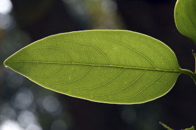
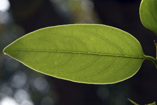

Trees up to 16 m tall.
16 ಮೀ. ಎತ್ತರದವರೆಗೆ ಬೆಳೆಯುವ ಮರಗಳು.
16 മീറ്റര്വരെ ഉയരത്തില് വളരുന്ന മരങ്ങള്.
மரம், 16 மீ. உயரம் வரை வளரக்கூடியது
Bark black, smooth; blaze dull orange.
ತೊಗಟೆ ಕಪ್ಪು ಬಣ್ಣದಲ್ಲಿದ್ದು, ನಯವಾಗಿರುತ್ತದೆ; ಕಚ್ಚು ಮಾಡಿದ ಜಾಗ ಮಬ್ಬಾದ ಕಿತ್ತಳೆ ಬಣ್ಣದಲ್ಲಿರುತ್ತದೆ.
മിനുസമാര്ന്ന, കറുത്ത, പുറംതൊലി; വെട്ട്പാടിന് മുഷിഞ്ഞ ഓറഞ്ച് നിറം.
மரத்தின் பட்டை கருப்பு நிறமுடையது, வழுவழுப்பானது, உள்பட்டை ஆரஞ்சு நிறமுடையது.
Young branchlets terete, covered by black, sooty hairs.
ಎಳೆಯ ಕಿರುಕೊಂಬೆಗಳು ದುಂಡಾಗಿದ್ದು ಕಪ್ಪು ಮಸಿ ಮಾದರಿಯ ರೋಮಗಳಿಂದ ಕೂಡಿರುತ್ತವೆ.
കറുത്ത ചാരംപോലുളള രോമങ്ങളാല് ആവൃതമായ, ഇളംശാഖകള് ഉരുണ്ടതാണ്.
சிறிய நுனிக்கிளைகள் குறுக்குவெட்டுத் தோற்றத்தில் வளையமானது, கருமை நிறமான உரோமங்கள் சூழப்பட்டிருக்கும்.
Leaves simple, alternate, distichous; petiole 0.5-1.1 cm long, flat, glabrous; lamina 9-27 x 3.5-8 cm, usually narrow elliptic-oblong to lanceolate, apex acute to acuminate with blunt tip, base acute to rounded, margin entire, coriaceous with minute pellucid punctate beneath, strongly and closely reticulate on both surfaces; midrib raised above; secondary_nerves 6-9 pairs.
ಎಲೆಗಳು ಸರಳವಾಗಿದ್ದು ಪರ್ಯಾಯ ಹಾಗೂ ಸುತ್ತು ಜೋಡನಾ ವ್ಯವಸ್ಥೆ ಯಲ್ಲಿದ್ದು ಕಾಂಡದ ಎರಡೂ ಕಡೆಯ ಎದುರು ಬದರಿನ ಸಾಲಿನಲ್ಲಿರುತ್ತವೆ; ಎಲೆ ತೊಟ್ಟುಗಳು 0.5 -1.1 ಸೆಂಮೀ.ಉದ್ದವಿದ್ದು, ಚಪ್ಪಟೆಯಾಗಿದ್ದು ರೊಮರಹಿತವಾಗಿರುತ್ತವೆ; ಪತ್ರಗಳು 9 – 27 X 3.5 – 8 ಸೆಂ.ಮೀ. ಗಾತ್ರ, ಸಾಮಾನ್ಯವಾಗಿ ಸಂಕುಚಿತ ಅಂಡವೃತ್ತ- ಚತುರಸ್ರದಿಂದ ಭರ್ಜಿವರೆಗಿನ ಆಕಾರ ಹೊಂದಿದ್ದು, ಚೂಪಾದುದರಿಂದ ಹಿಡಿದು ಮೊಂಡಾದ ಅಗ್ರವುಳ್ಳ ಚೂಪಾದ ಅಥವಾ ಕ್ರಮೇಣ ಚೂಪಾಗುವ ತುದಿ ; ಚೂಪಾದುದರಿಂದ ದುಂಡಾಕಾರದ ಬುಡ, ನಯವಾದ ಅಂಚು, ತೊಗಲವನ್ನೋಲುವ ಮೇಲ್ಮೈ ಹೊಂದಿದ್ದು, ಪತ್ರದ ತಳಭಾಗದಲ್ಲಿ ಪ್ರಕಾಶ ಬೇಧ್ಯ ಮಚ್ಚೆಗಳಿರುತ್ತವೆ; ಎಲೆಗಳ ಎರಡೂ ಬದಿಯಲ್ಲಿ ಧೃಡವಾದ ಹಾಗೂ ಸನಿಹವಾದ ಜಾಲಬಂಧ ನಾಳಗಳಿರುತ್ತವೆ;ಮಧ್ಯನಾಳ ಪತ್ರದ ಮೇಲ್ಭಾಗದಲ್ಲಿ ಉಬ್ಬಿರುತ್ತದೆ ;ಎರಡನೇ ದರ್ಜೆಯ ನಾಳಗಳು 6 - 9 ಜೋಡಿಗಳಿರುತ್ತವೆ.
ലഘുവായ ഇലകള്, ഏകാന്തരമായി, തണ്ടിന്റെ രണ്ടുഭാഗത്തുമാത്രമായി അടുക്കിയവിധത്തിലാണ്; പരന്നതും, അരോമിലുമായ, ഇലഞെട്ടിന് 0.5 സെ.മീ മുതല് 1.1 സെ.മീ വരെ നീളം; പത്രഫലകത്തിന് 9 സെ.മീ. മുതല് 27 സെ.മീ. വരെ നീളവും 3.5 സെ.മീ. മുതല് 8 സെ.മീ. വരെ വീതിയും, സാധാരണയായി ദീര്ഘവൃത്താകാരം, ആയതാകാരം തൊട്ട് കുന്താകാരം വരെയുമാകാം, പത്രാഗ്രം നിശിതം തൊട്ട് മുനപ്പില്ലാത്ത ദീര്ഘാഗ്രം വരെയാകാം; പത്രാധാരം നിശിതം തൊട്ട് വൃത്താകാരം വരെയാകാം, അരികുകള് അവിഭജിതമാണ്, കീഴെ സൂക്ഷ്മമായ പെല്ലുസിഡ് പുള്ളികളുള്ള ചര്മ്മില പ്രകൃതം, ഇരുവശത്തും കനത്തിലും വളരെ അടുത്തും ജാലിതമാണ്; മുഖ്യസിര മുകളില് ഉയര്ന്നു നില്ക്കുന്നതാണ്; 6 മുതല് 9 വരെ ജോഡി ദ്വിതീയ ഞരമ്പുകള്.
இலைகள் தனித்தவை, மாற்றுஅடுக்கமானவை, இருநெடுக்கு வரிசையிலையடுக்கம் (டைஸ்டிக்கஸ்); இலைக்காம்பு 0.5-1.1 செ.மீ. நீளமானது, குறுக்குவெட்டுத் தோற்றத்தில் பிளேனோகான்வக்ஸ், உரோமங்களற்றது; இலை அலகு 9-27 X 3.5-8 செ.மீ., பொதுவாக குறுகிய நீள்வட்டம்-நீள்சதுரம் முதல் ஈட்டி வடிவமுடையது, அலகின் நுனி கூரியது முதல் வால் போன்று நீண்டு முனை மழுங்கியது அலகின் தளம் கூரியது முதல் வட்டமானது, அலகின் விளிம்பு முழுமையானது, கோரியேசியஸ் மற்றும் கீழ்பரப்பில் சுரப்பிகள் போன்ற அமைப்பு (பங்க்டேட்) உடையது, இருபரப்பிலும் தெளிவான மற்றும் நெருக்கமான வலைப்பின்னல் உடையது; மையநரம்பு மேற்புறத்தில் அலகின் பரப்பைவிட உயர்ந்து இருக்கும்; இரண்டாம் நிலை நரம்புகள் 6-9 ஜோடிகள்.
Flowers unisexual; male flowers in axillary paniculate cymes; female flowers axillary, solitary or 2-5 flowered cymes; calyx covered with black sooty hairs.
ಹೂಗಳು ಏಕ ಲಿಂಗಿಗಳಾಗಿರುತ್ತವೆ; ಗಂಡು ಹೂಗಳು ಅಕ್ಷಾಕಂಕುಳಿನಲ್ಲಿನ ಪುನರಾವೃತ್ತಿಯಾಗಿ ಕವಲೊಡೆಯುವ ಮಧ್ಯಾರಂಭಿ ಪುಷ್ಪಮಂಜರಿಯಲ್ಲಿರುತ್ತವೆ; ಹೆಣ್ಣು ಹೂಗಳು ಅಕ್ಷಾಕಂಕುಳಿನಲ್ಲಿ ಒಂಟಿಯಾಗಿ ಅಥವಾ 2 ರಿಂದ 3 ಹೂಗಳನ್ನೊಳಗೊಂಡ ಮಧ್ಯಾರಂಭಿ ಪುಷ್ಪಮಂಜರಿಯಲ್ಲಿರುತ್ತವೆ ;ಪುಷ್ಪಪಾತ್ರೆ ಕಪ್ಪು ಮಸಿಯ ತರಹದ ರೋಮಗಳಿಂದ ಕೂಡಿರುತ್ತವೆ.
പൂക്കള് ഏകലിംഗികളാണ്; ആണ് പൂക്കള്, കക്ഷീയ, പാനിക്കിള് സൈമുകളിലുണ്ടാകുന്നു; കറുത്ത ചാരം പോലുള്ള രോമങ്ങള് നിറഞ്ഞ ബാഹ്യദളങ്ങളുള്ള പെണ് പൂക്കള് ഒറ്റയായോ 2 മുതല് 5 വരെ എണ്ണം ഒന്നിച്ചോ കക്ഷീയ സൈമുകളിലുണ്ടാകുന്നു.
ஓர்பால் மலர்கள்; ஆண்மலர்கள் இலைக்கோணங்களில் பேனிக்குலேட் சைம்; பெண்மலர்கள் தனித்தவை, இலைக்கோணங்களில் தோன்றுபவை, அல்லது 2-5 மலர்கள் கொண்ட சைம்; புல்லி இதழ்கள் கருமை நிறமான உரோமங்களால் சூழப்பட்டிருக்கும்.
Berry, ovoid covered with rusty and sooty hairs when young, later glabrous; calyx_accrescent, foliaceous with folded lobes, black sooty hairs inside; seeds 4, smooth.
ಬೆರ್ರಿಗಳು ಅಂಡಾಕಾರದಲ್ಲಿದ್ದು ಎಳೆಯದಾಗಿದ್ದಾಗ ತುಕ್ಕು ಹಿಡಿದ ಮತ್ತು ಕಪ್ಪು ಮಸಿಯ ತರಹದ ರೋಮಗಳಿಂದ ಕೂಡಿರುತ್ತವೆ ನಂತರ ರೋಮರಹಿತವಾಗುತ್ತವೆ; ಪುಷ್ಪಪಾತ್ರೆ ವೃದ್ಧಿಸಿದ್ದು, ಎಲೆರೂಪಿಯಾಗಿದ್ದು ಮಡಚಿದ ದಳಗಳನ್ನು ಹೊಂದಿದ್ದು ಒಳಭಾಗದಲ್ಲಿ ಕಪ್ಪು ಮಸಿಯ ತರಹದ ರೋಮಗಳಿಂದ ಕೂಡಿರುತ್ತವೆ.;ಬೀಜಗಳು 4 ಇದ್ದು ನಯವಾಗಿರುತ್ತವೆ;
ഇളതായിരിക്കുമ്പോള് കറുത്ത ചാരം പോലുള്ളതോ തുരുമ്പന് രോമങ്ങളോ നിറഞ്ഞതും, പിന്നീട് അരോമിലവുമായ അണ്ഡാകാര ബെറിയാണ് കായ; കായോട് ഒട്ടിനില്ക്കുന്ന ബാഹ്യദളങ്ങള്, പത്രസമാനവും മടങ്ങിയ ഭാഗങ്ങളുള്ളതും അകത്ത് കറുത്ത ചാരം പോലുള്ള രോമങ്ങള് നിറഞ്ഞതുമാണ്; 4 വീതം
முழுச்சதைகனி (பெர்ரி), முட்டை வடிவமுடையது, பிஞ்சு பொன் நிறமான உரோமங்களால் சூழப்பட்டிருக்கும், முதிர்ந்த கனி உரோமங்களற்றது; நிரந்தரமான புல்லி இதழ்கள் வளரக்கூடியது, இலைபோன்றது மற்றும் மடிப்புகளுடையது, உட்புறம் கருமைநிற உரோமங்கள் கொண்டது; விதைகள் 4, வழுவழுப்


 
